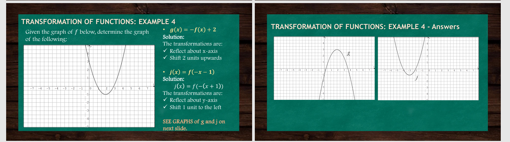

Transformation of Functions:
Transformations are changes made to the graph of a function to shift, stretch, shrink, or reflect it. These do not change the basic shape of the function, only its position or orientation.
Types of transformations:
1. Translation (Shifts):
• Vertical shift: f(x) + k → moves the graph up (if k > 0) or down (if k < 0).
• Horizontal shift: f(x - h) → moves the graph right (if h > 0) or left (if h < 0).
2. Reflection:
• Across the x-axis: -f(x) → flips the graph upside down.
• Across the y-axis: f(-x) → mirrors the graph left to right.
3. Stretching and Compressing:
• Vertical stretch/compression: a \cdot f(x) → stretches if |a| > 1, compresses if 0 < |a| < 1.
• Horizontal stretch/compression: f(bx) → compresses if |b| > 1, stretches if 0 < |b| < 1.
